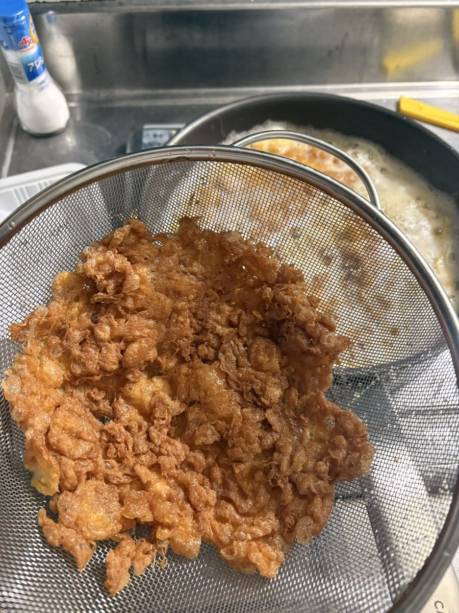

愛總是身不由己
@Ayanekawaii2
今天吃的太差了。。中午吃了松屋的牛丼 晚上吃的这个湘遇也好难吃 虽然名字就叫干锅孜然牛肉吧但是孜然味有点太重了比那种劣质烧烤还难吃 还搞的我一回家就肠胃不舒服 服务态度也不好 免费的小菜加了一次以后就说没有了。。。好坏

愛總是身不由己
@Ayanekawaii2
p1避难训练p2昨天点了湘聚的外卖今天想去线下吃结果猪脑发力导航到了湘遇我还问店员为什么没有这个菜然后才发现不是同一家p3国内寄来的东西终于到了做了预制炸蛋放冰箱里以后煮螺蛳粉米线的时候吃p4去看房子的路上拍的 https://t.co/DOMOgV41qQ